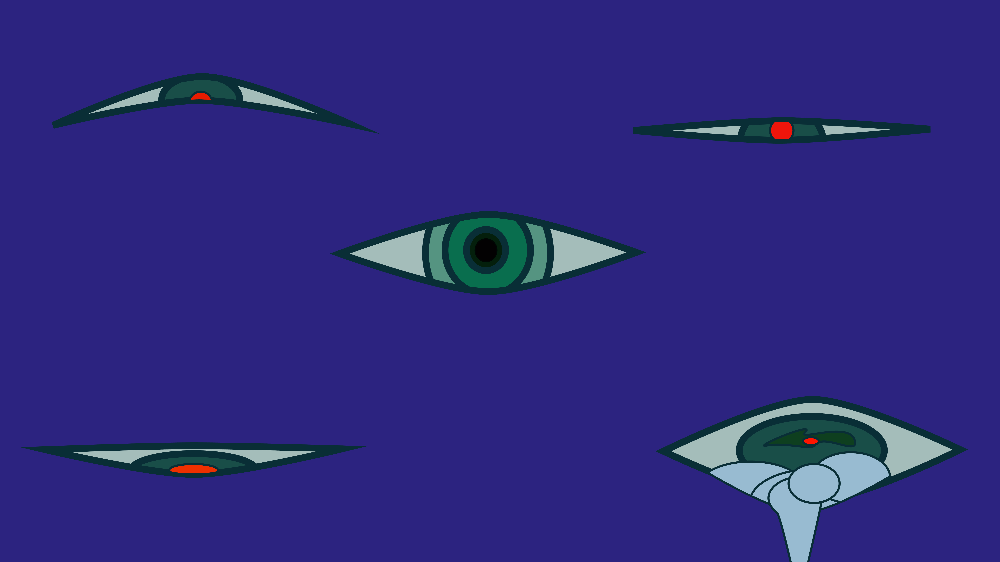
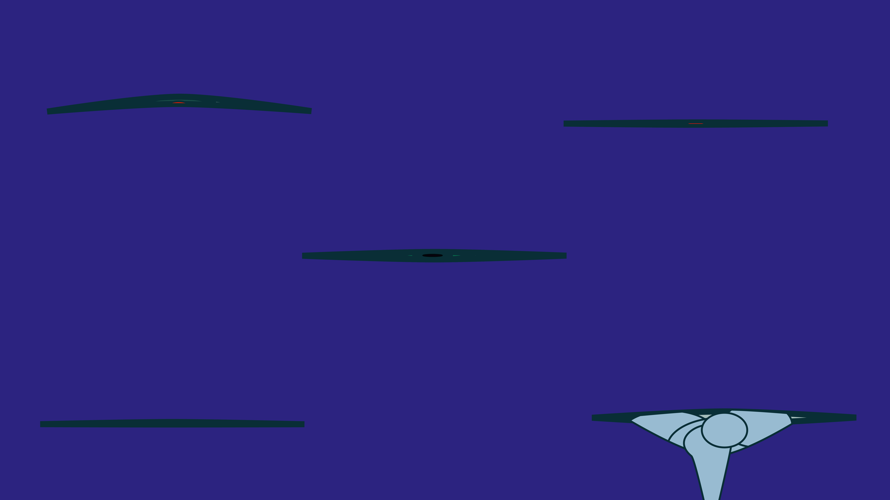
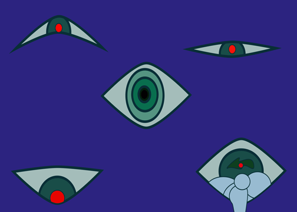
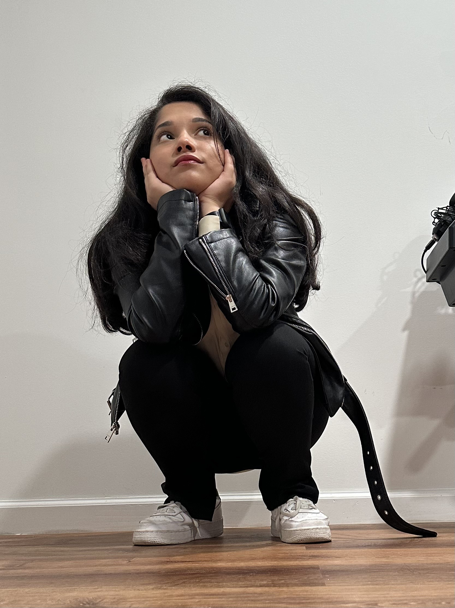
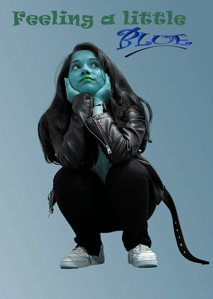

Eye2





First I created one duplicate of the Eye2 image and fixed each individual eye to be half blinking or half closed, then I made another duplicate of that and fully made the eyes close. I also made the tears move with the sad eye. After that, I exported each artboard or image to Photoshop: File > Script > Load into Stacks, chose the 3 images of the blinking motion, opened the Timeline panel, selected Create Frame Animation, made frames from layers, set the animation to forever, and adjusted durations (open 0.1s, half closed 0.15s, closed 0.2s). To export the GIF I selected File > Export > Save for Web, set size 504x360 px, colors 256, dither 100%, and saved as eyegif.
First, I chose the canvas to be 5x7 and then uploaded my image. I used the subject selection tool to select myself, duplicated the selection (Ctrl + J), deleted the background layer, renamed the new layer as "me", then used gradient fill and hue/saturation to make the background and skin blue. I converted the image to a smart object, used Puppet Warp, duplicated the layer, and applied points to animate the feet, shoulders, and belt like a cat tail, repeating for the opposite motion. I created a frame animation in the Timeline panel, duplicated the first frame for smooth looping, and added text: "feeling a little" in Ravie font, 28.54pt, leading 12pt, tracking 25; "Blue" in Curtz MT, 36pt, leading 48pt, tracking -100, bold, italic, underlined, with warp and shadow effects. Finally, I exported it as a GIF and imported it to my webpage.
HOME